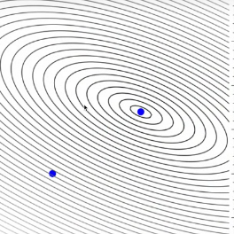
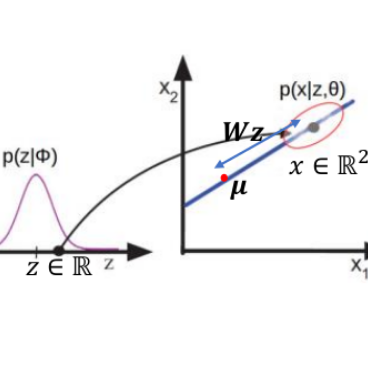

|
Hello All !! Welcome to my tiny corner on the web. Current Role: I currently work as a e42.ai (since July 2023), where I architect and deploy cutting-edge NLP solutions, from RAG systems to production-ready AI pipelines. I've built multiple production APIs serving thousands of daily requests, developed sophisticated RAG systems, and fine-tuned VLMs for specialized extraction tasks. I also work extensively with DevOps practices, focusing on cost reduction through optimized node management and streamlined deployments. Previous Experience: I worked as an NLP Engineer at Circlebase (Intelligent Health Outcomes), where I developed pipelines and models to identify patient-related entities, social determinants of health, drug relations, and adverse drug events. I also streamlined processes through executable files, integration with Django-based applications, and Dockerization of products.
I graduated with a Master's degree in Machine Learning and Computing under Department of Mathematics from the Indian Institute of Space Science and Technology. My research interests lie in the intersection of Machine Learning optimization, Computer Vision, Natural Language Processing, and Theoretical Computer Science. Prior to this, I spent 4 amazing years at Jabalpur Engineering College, earning a Bachelor's in Information Technology. Current Expertise: RAG Systems, Invoice Entity Recognition, NLP2SQL, Vision-Language Models (VLM) Fine-tuning, Function Calling, Quantized Model Serving with LlamaCPP & ExllamaV2, Docker, FastAPI, AWS |
| |
Note: Led multiple teams and mentored junior engineers across projects while maintaining hands-on technical contributions to architecture and implementation. |
| |
 |
Initially the model assumptions were tested on the diabetes dataset and applied Least Angle Regression to generate multiple models |
 |
Expectation Maximization on Probabilistic Principal Component Analysis |
| |